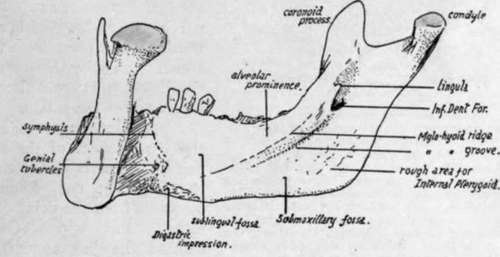
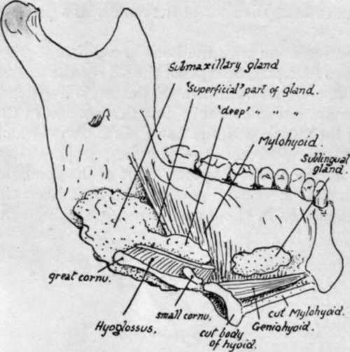
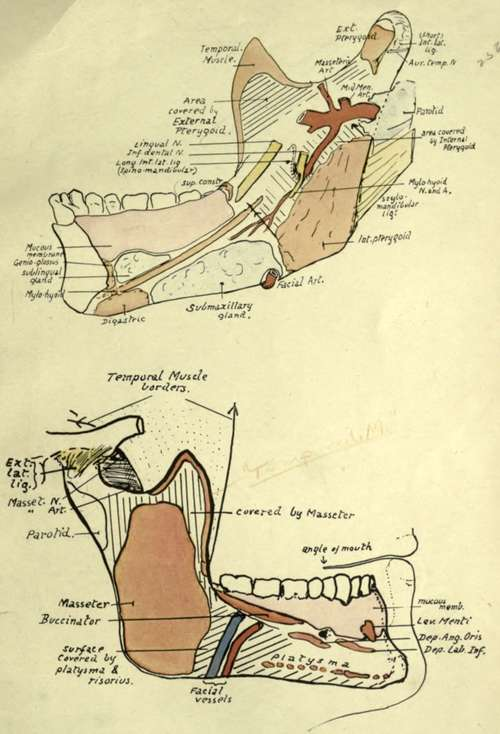

Lower Jaw Or Mandible. Part 2
Description
This section is from the book "The Anatomy Of The Human Skeleton", by J. Ernest Frazer. Also available from Amazon: The anatomy of the human skeleton.
Lower Jaw Or Mandible. Part 2
The remainder of the outer surface of the body is covered by the superficial tissues of the face. The deep fascia of the neck is attached to the lower border, and the Platysma, lying on this, gets some insertion into the bone from the chin outwards. In the posterior part of the region, however, the muscle is carried on over the facial vessels, and usually blends here with the Risorius muscle.
Fig. 202.-Inner aspect of right half of mandible.
The mucous membrane on the outside of the alveolus belongs to the alveolo-labial or extra-dental sulcus, and it can be seen (Fig. 204) on the bone that the sulcus becomes shallower as it is traced backwards : the Buccinator is attached opposite the molars, nearer the line of the teeth than the muscles further forward.
Behind the last molar the mucous membrane becomes continuous with that on the inner side of the jaw by a narrow strip crossing the extreme back part of the alveolus. This strip lies between the last tooth and the attachment to the bone of the pterygo - mandibular ligament, which passes downwards and outwards to this point from the bony region formed by the lower end of the internal pterygoid plate and the tuberosity of the palate.
The Buccinator arises from the front aspect of the ligament, and its line of origin extends on to the jaw (Fig. 204) forwards and outwards from the point of attachment : the upper Constrictor reaches the jaw along the back aspect of the ligament, obtains a few fibres of origin from the bone behind and internal to the attachment, and then passes along the mucous membrane to the tongue. The diagram in Fig. 206 shows the arrangement of the structures in this region, and the path of the lingual nerve is seen below, behind, and outside the fibres of the Constrictor, and then below the mucous membrane to reach the tongue.
The same diagram also shows that the ramus of the jaw with its attached muscles is placed in contact with the side wall of the pharynx. The Internal Pterygoid is the deepest of these muscles, and is therefore the one in immediate contact with the pharyngeal structures. Thus at its origin it is in contact with the internal pterygoid plate and the Tensor palati behind this (Fig. 205), which separates it from the sinus of Morgagni and the structures passing through th;s : below these it is in direct relation with the upper Constrictor and, a little lower, with the muscles running on the Constrictor to the pharyngeal wall, i.e., Stylo-glossus and (deeper) Stylo-pharyngeus : near the angle it is in contact with the submaxillary gland, which-with the head in the natural position-separates it from Digastric and Stylo-hyoid, and from the external carotid artery where this turns upwards, outwards and backwards from the wall of the pharynx, along the Stylo-hyoid.
Fig. 203.-A diagrammatic sketch to show how the salivary glands of the floor of the mouth come into relation with the lower jaw. The mass of the tongue is supposed to have been removed, the hyoid divided through the body, and the left half of the mandible and Mylohyoid viewed from the inner side. The major portion of the submaxillary gland is seen to lie on the outer side of the Hyoglossus, which has been cut across near its origin, and the posterior part of the gland comes into relation with the Internal Pterygoid insertion ; the front part of the gland reaches the edge of Mylo-hyoid and passes partly below and external to it and partly above and internal to it. It is the former of these two parts, the " superficial part," which alone lies in contact with the bone ; the " deep part " lies in the sulcus between Hyoglossus and Mylo-hyoid. The sublingual gland, on the other hand, touches the bone further forward, above the origin of the muscle.
Fig. 204.-Attachments and relations of mandible. Upper figure shows the inner side of the right half of the bone. The parallel lines indicate the regions in relation with the inner and outer Pterygoid muscles ; between the former and the bone several structures are seen (compare Fig. 207), but the external Pterygoid is in direct contact with the jaw and the Temporal insertion, the masseteric vessels alone intervening between it and the bone. The outer aspect (lower figure) shows the ramus covered by Masseter with the exception of a small area above and behind where the parotid lies on the bone. The body is divided by the Buccinator and oblique line into an upper and front part 1 covered by mucous membrane, and a lower and back part covered by facial muscles, deep to which the facial vessels cross the bone and pass on to the Buccinator. The arrows mark the borders of the Temporal tendon ; observe the extent of its insertion.
The insertion of the Internal Pterygoid (Fig. 204) is by mixed muscular and tendinous fibres, as can be inferred from the roughnesses in its area : it extends high along the back part of the inner surface of the ramus, nearly reaching the neck, and here the parotid turns round the back of the bone and comes into relation with its inner aspect. The fibres of the muscle pass upwards, forwards and inwards to their origin, so that a rapidly-increasing interval occurs between them and the ramus. In the top of this interval the External Pterygoid separates the inner muscle from the plane of the jaw, and below this the bone has in relation with it, and between it and the Internal Pterygoid, the internal maxillary artery and some of its branches, the lingual and inferior dental nerves, the internal lateral ligament, the mylohyoid nerve and vessels, and frequently a small process of the parotid gland (Fig. 204).
Continue to: